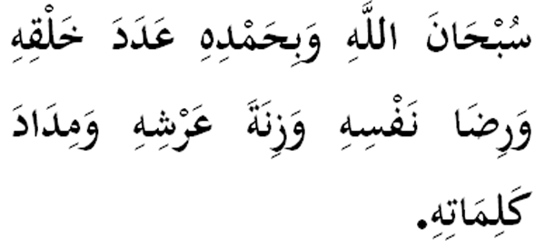

|
Terjemahan "(Kami ucapkan) Maha Suci Allah dengan segala tahmidNya, sebanyak makhluk ciptaanNya, serela hatiNya, seberat timbangan 'ArasyNya dan sebanyak tinta kalimahNya." Fadhilat Wirid Daripada Juwairiah Ummul Mukminin (RA) sesungguhnya Rasulullah (SAW) keluar aru tempatnya pagi-pagi hari apabila baginda selesai sembahyang subuh dan dia masih dalam masjidnya, kemudian Rasulullah (SAW) balik semula selepas baginda sembahyang sunat Dhuha. Lalu sabda Rasulullah (SAW) : "Engkau masih berada seperti dalam keadaan masa saya keluar tadi." Jawab Juwairiah: "Ya." Maka sabdanya lagi: "Sesungguhnya saya telah membaca selepas itu empat kalimah (bacaan di atas) sebanyak tiga kali di mana jika boleh ditimbangkan dengan apa yang dibaca sejak pagi tadi sudah tentu saya timbangkan." |

|